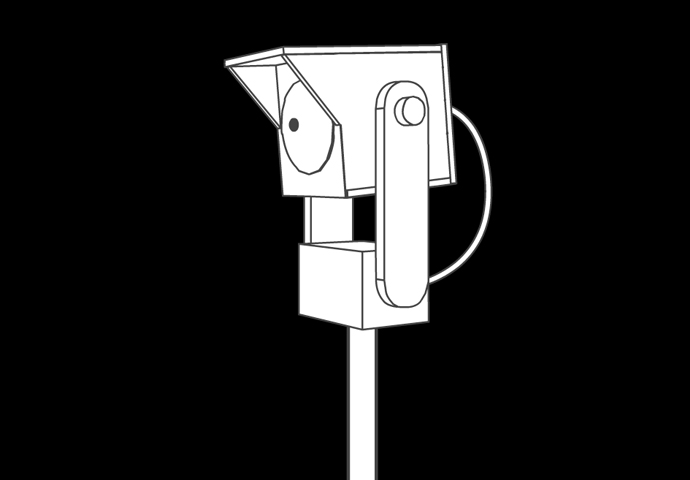
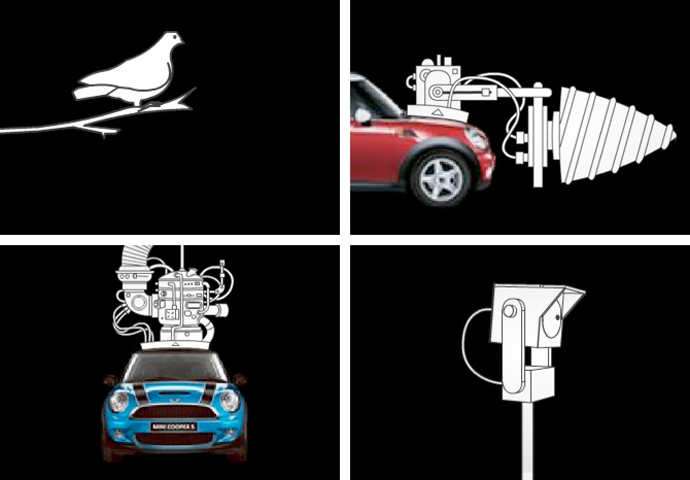

MINI // LIES
These seemingly straightforward ads showcase several features of the new Mini. The final feature mentioned however is pure fantasy. Once it's made clear that this is an outright fib, the equipment quickly folds away back into the car.View: Drill Periscope Pigeon

